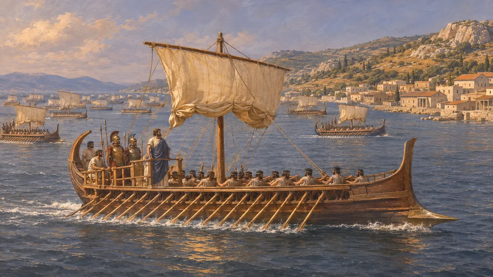
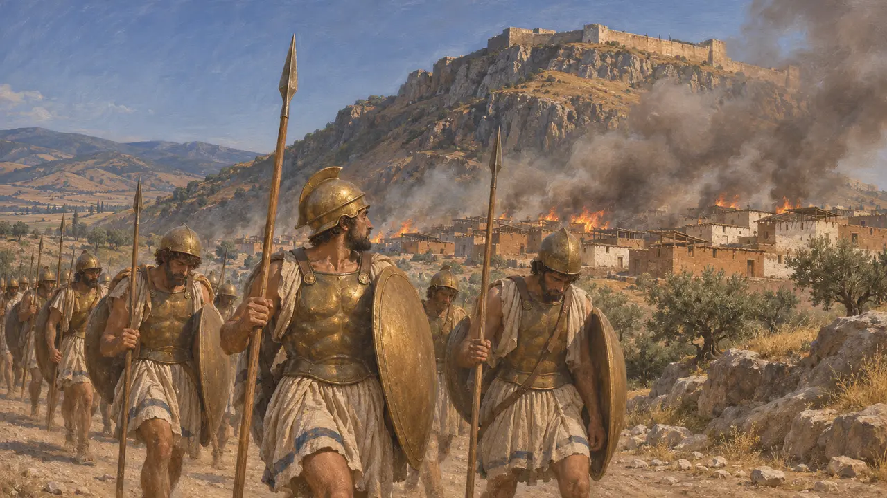
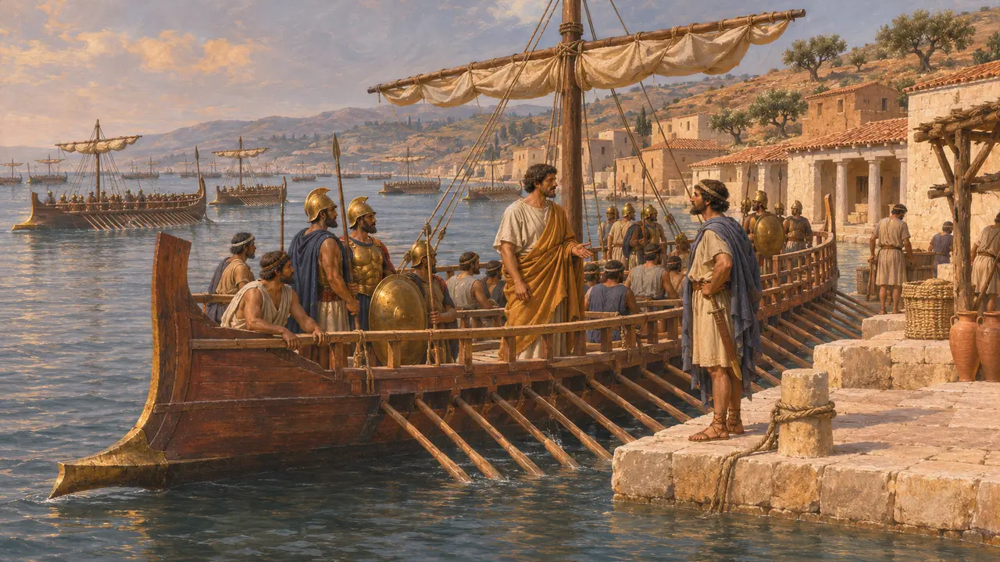

ميلانثيوس
قائد أثيني تولّى قيادة السفن العشرين التي أُرسلت إلى ثورة أيونيا، نحو عام 498 ق.م
في اللعبة: المستوى 7: سارديس تحترق
كان ميلانثيوس الأثيني الذي قاد، بحسب هيرودوت، عشرين سفينة أُرسلت نحو عام 498 لمساعدة اليونانيين الأيونيين ضد الملك. انضمت السفن إلى الزحف على سارديس، الذي انتهى باحتراق المدينة. ويسمّي هيرودوت هذه السفن بداية الشرور للإغريق وغير الإغريق على حدّ سواء.
في اللعبة: تذكر اللعبة ميلانثيوس في الحولية وفي مقالة الثورة الأيونية فقط، بوصفه قائد السفن الأثينية. وليست له شخصية ولا وحدة ولا آلية خاصة به.
تصويت الأثينيين على السفن
رواية قديمةيذكر هيرودوت أن أريستاغوراس الميليتي، بعد أن أخفق في استمالة إسبرطة، قدم إلى أثينا وأقنع الجمعية بإرسال العون. فصوّت الأثينيون على إرسال عشرين سفينة، وولّوا ميلانثيوس قيادتها. ويصفه هيرودوت بأنه مواطن محترم.
Herodotus 5.97

ما يقوله هيرودوت عن السفن
رواية قديمةيرى هيرودوت أن السفن العشرين كانت بداية الشرور على اليونانيين وغير اليونانيين. وأرسلت إريتريا خمس سفن أخرى، ويربط هيرودوت ذلك بمساعدة سابقة قدمتها ميليتوس لإريتريا. ويذكر هيرودوت أيضًا أن أثينا كانت قد أرسلت من قبل التراب والماء إلى أرتافرنيس تحت الضغط، فكانت تلك المعونة تحولًا حادًا في المسار.
Herodotus 5.97, 5.99, 5.73

سارديس والانسحاب
رواية قديمةيقول هيرودوت إن السفن رست قرب أفسس، وإن الحلفاء زحفوا نحو الداخل بصحبة أدلّاء أيونيين واستولوا على سارديس، عدا القلعة. واندلعت فيها نار امتدت عبر المدينة السفلى. ويذكر بين القتلى بعد الهجوم المضاد الفارسي الإريتري إيوالكيداس، ولا يأتي على ذكر ميلانثيوس بعد ذلك. وعاد الأثينيون إلى ديارهم بعد الهزيمة قرب أفسس ورفضوا تقديم المزيد من العون، رغم مناشدات أريستاغوراس.
Herodotus 5.100-103

مقدار ما يُعرف عن الرجل
متنازع عليههيرودوت هو المصدر الرئيسي الباقي لاسم القائد، وهو اسم يرد مرة واحدة في روايته. ولا توجد وثيقة فارسية معروفة لنا تذكره أو تذكر الفرقة الأثينية. ولذلك يستند الاسم وعدد السفن إلى رواية هيرودوت وحدها، ويختلف المؤرخون في مقدار الثقل الذي حملته المعونة الأثينية إلى جانب القوات الأيونية والإريترية.
P. Briant, From Cyrus to Alexander, 2002
المصادر
- Herodotus 5.97
- Herodotus 5.99-103
- Herodotus 5.73
- P. Briant, From Cyrus to Alexander, 2002